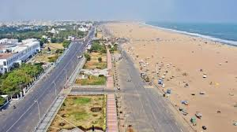

Marina Beach with its 12 kms long stretch is the longest beach in India and is considered as one of the longest beaches in Asia. Located on the eastern side of Chennai, adjoining the Bay of Bengal, it is also Chennai's major tourist attraction today. Viewing the sun set and sunrise from the beach is a mesmerizing experience. Marina Beach is often the venue for important state functions.
With its natural sandy walks, the Marina beach is a major attraction for tourists visiting Chennai, who can enjoy a leisurely evening or morning stroll along the Marina . Tourists can even shop and eat at the stalls lined on the beach, with local vendors selling things such as shell, glass baubles, kites and fruit juices. One can also enjoy pony rides at the beach site. There are many beautiful statues of Tamil scholars, patriots, and noted personalities on Marina Beach. The Statue of Labour being the most famous and depicting the efforts of a team of laborers who are involved in exhausting, manual work. Other statues include that of Mahatma Gandhi, Sir Thomas Munro, Tilak Bhavan, Tiruvalluvar, Bharathidasan, Kamarajar, Avvaiyar, Swami Sivananda, Thanthai Periyar and Kannagi, the heroine of Tamil epic 'Silappathikaaram'. The Anna and MGR samadhis of the popular chief ministers of the state are also build here.
Location and how to reachIn proximity to the Marina beach is the aquarium, which houses some of the most exotic collection of tropical sea fishes and fresh water fishes. Some beautiful buildings in Chennai such as the University of Madras, Senate-House, Chepauk Palace, Presidency College, P.W.D office and Ice House are also located on the beach drive.
